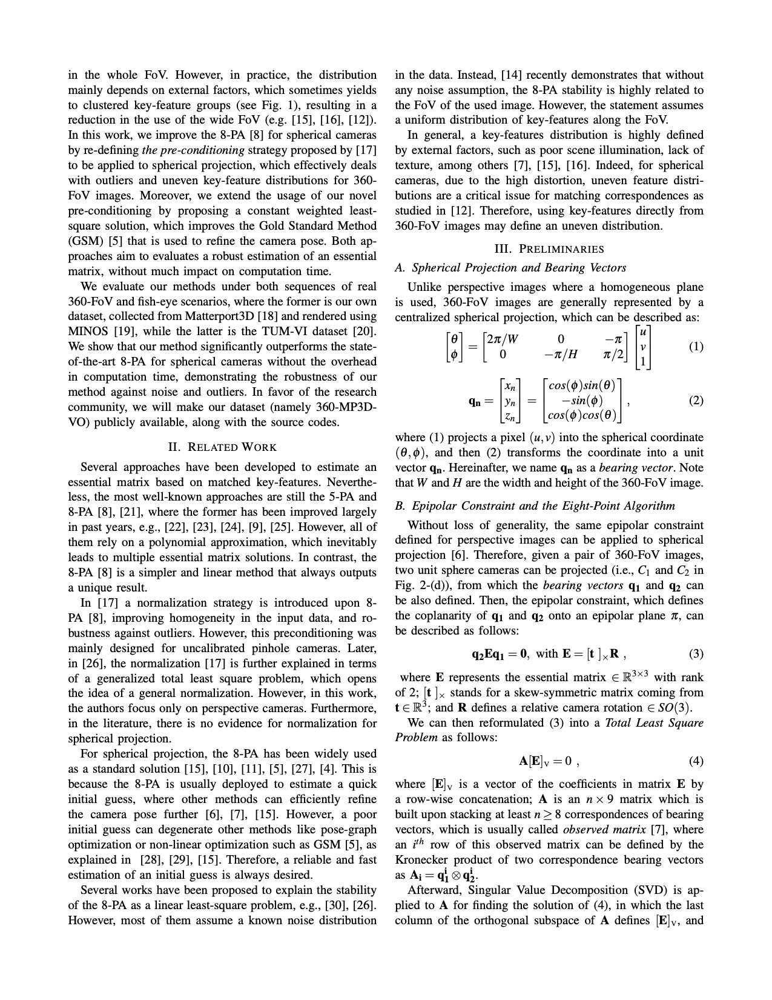
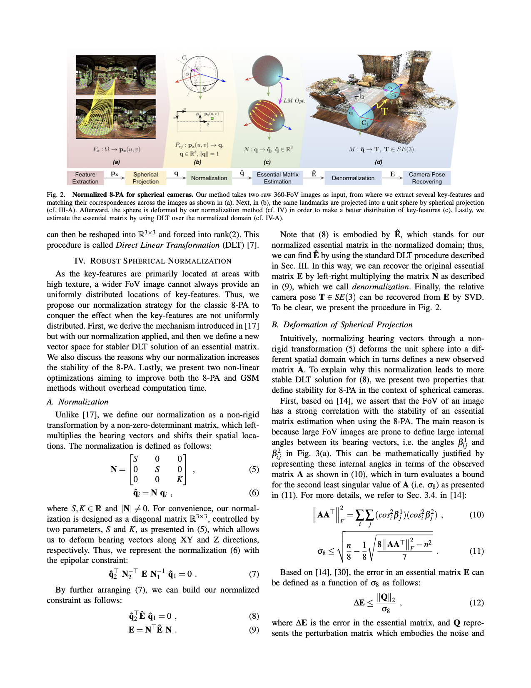
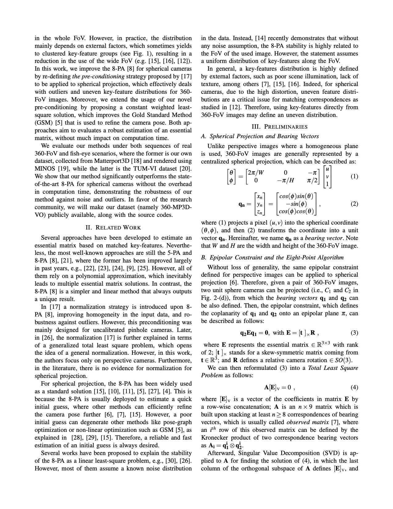
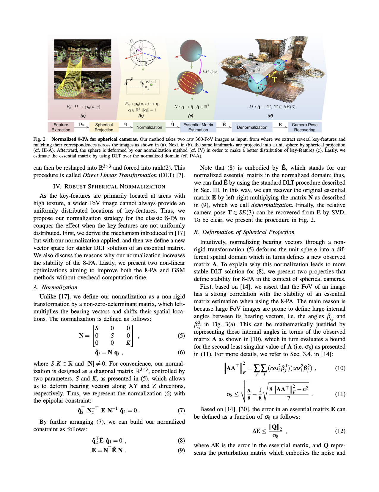

Robust 360-8PA: Redesigning The Normalized 8-point Algorithm
for 360-FoV Images
Bolivar Solarte1,
Chin-Hsuan Wu1,
Kuan-Wei Lu1,
Yi-Hsuan Tsai3,
Wei-Chen Chiu2,
Min Sun1
1 National Tsing Hua University,
2 National Chiao Tung University ,
3 NEC Labs America


ICRA 2021


 


